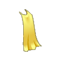
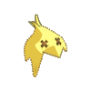
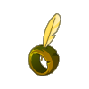
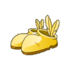
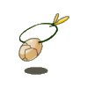
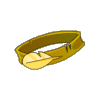
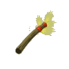

Menu barbok'you

| Niveau 26 | Cape du Tofu | ||
|---|---|---|---|
| Recettes : | Caractéristiques : | Conditions : | |
|  | 35 Plumes de tofu 30 Becs du tofu 30 Oeufs de tofu 1 Plume du batofu |
+1 à 3 dommages | aucune |
| Remarques : | |||
| La cape du tofu se drop sur batofu à la fin du donjon tofu | |||
| Niveau 23 | Kaskofu | ||
|---|---|---|---|
| Recettes : | Caractéristiques : | Conditions : | |
|  | 1 Plume du batofu 25 Plumes de tofu 18 Bec du tofu 13 Oeuf de tofu |
+6 à 15 sagesse | aucune |
| Remarques : | |||
| Se drop sur batofu à la fin du donjon Tofu | |||
| Niveau 21 | Anneau du Tofu | ||
|---|---|---|---|
| Recettes : | Caractéristiques : | Conditions : | |
|  | 13 Plumes de tofu 12 Bec du tofu 8 Oeuf de tofu 1 Plume du batofu |
+6 à 15 agilité +1 à 10 sagesse |
aucune |
| Remarques : | |||
| L'anneau du tofu se drop sur battofu, fin du donjon tofu | |||
| Niveau 23 | Pantoufles du Tofu | ||
|---|---|---|---|
| Recettes : | Caractéristiques : | Conditions : | |
|  | 22 Bec du tofu 12 Plumes de tofu 9 Oeuf de tofu 1 Plume de batofu |
+6 à 15 vitalité +6 à 15 intelligence +6 à 15 agilité |
aucune |
| Remarques : | |||
| Les pantoufles du tofu se drop sur battofu, fin du donjon tofu | |||
| Niveau 22 | Amulette du Tofu | ||
|---|---|---|---|
| Recettes : | Caractéristiques : | Conditions : | |
|  | 18 Plume de tofu 11 Bec du tofu 10 Oeuf de tofu 1 Plume du batofu |
+6 à 15 agilité +2 à 3 CC |
aucune |
| Remarques : | |||
| L'amulette du tofu se drop sur battofu, fin du donjon tofu | |||
| Niveau 22 | Ceinture du Tofu | ||
|---|---|---|---|
| Recettes : | Caractéristiques : | Conditions : | |
|  | 10 Plume de tofu 9 Bec du tofu 8 Oeuf de tofu 1 Plume du batofu |
+6 à 15 intelligence +6 à 15 agilité +1 à 200 pods |
aucune |
| Remarques : | |||
| La ceinture du tofu se drop sur battofu, fin du donjon tofu | |||
| Niveau 25 | Baguette du Tofu | |||
|---|---|---|---|---|
| Recettes : | Effets : | Caractéristiques : | Conditions : | |
|  | 18 Bec du tofu 16 Plumes de tofu 11 Oeuf de tofu 1 Plume du batofu |
Vole : 3 à 4 (feu) Vole : 3 à 4 (air) |
PA : 6 Portée : 2 à 2 Bonus CC : +5 Critique : 1/50 Echec : 1/50 |
aucune |
| Remarques : | ||||
| Le baguette du tofu se drop sur battofu, fin du donjon tofu | ||||
| 1 Items | Aucun bonus |
|---|---|
| 2 Items | +2 Dommages / +50 Initiative |
| 3 Items | +3 Dommages / +100 Initiative / +5 Agilité / +5 Vitalité |
| 4 Items | +4 Dommages / +150 Initiative / +10 Agilité / +10 Vitalité |
| 5 Items | +5 Dommages / +200 Initiative / +20 Agilité / +20 Vitalité |
| 6 Items | +6 Dommages / +250 Initiative / +40 Agilité / +40 Vitalité / +15 Sagesse |
| 7 Items | +7 Dommages / +300 Initiative / +60 Agilité / +60 Vitalité / +30 Sagesse |
| Bonus de la panoplie complète |
|---|
| +85 à 121 agilité +2 à 3 CC +37 à 55 sagesse +66 à 75 vitalité +12 à 30 intelligence +8 à 10 dommages +1 à 200 pods +300 initiative |
Dofus est un MMORPG édité par Ankama." Barbok " est un site non-officiel sans aucun lien avec Ankama.
Toutes les illustrations sont la propriété d'Ankama Studio et de Dofus. Le contenu de ce site a été rédigé initialement par Immortal, il ne s'agit que d'une remise en ligne effectuée par Eternal Games.